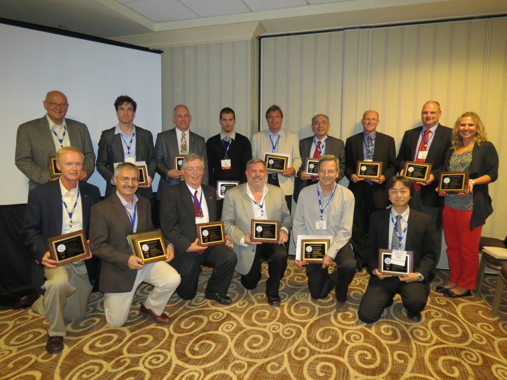
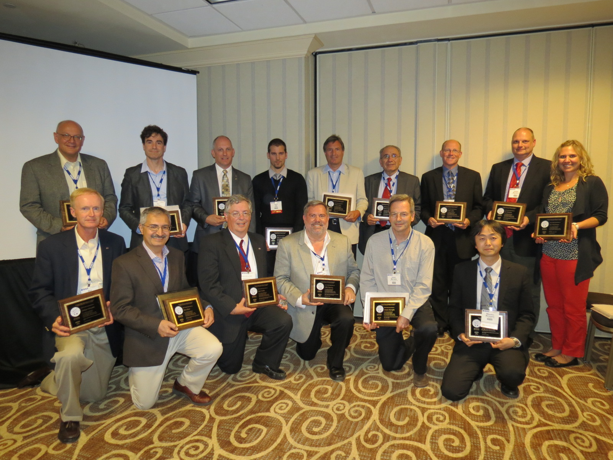

DPW Awards and Recognitions
2013 AIAA Aerospace Sciences - Fluid Sciences Recognition
The Organizing Committees of the AIAA CFD Drag Prediction Workshops Series were recognized
"For Lasting Contributions to the Enduring Success and Worldwide Influence
of the AIAA CFD Drag Prediction Workshop (DPW) Series"
during the 2013 AIAA Aerospace Sciences - Fluid Sciences Event, held in San Diego, CA.
Click here
for the AIAA announcement.
 |
|  |
 |
NASA Official Responsible for Content
Joseph H. Morrison
Last Updated
21 June 2015